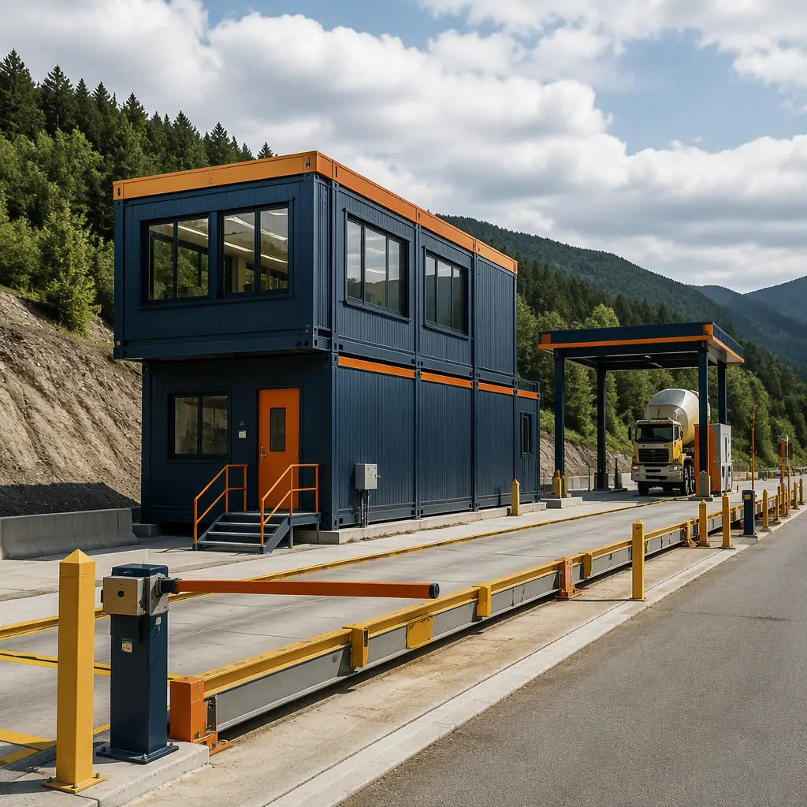
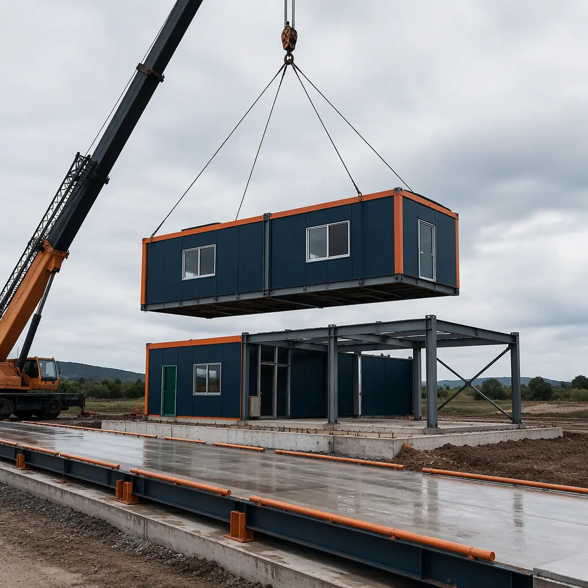
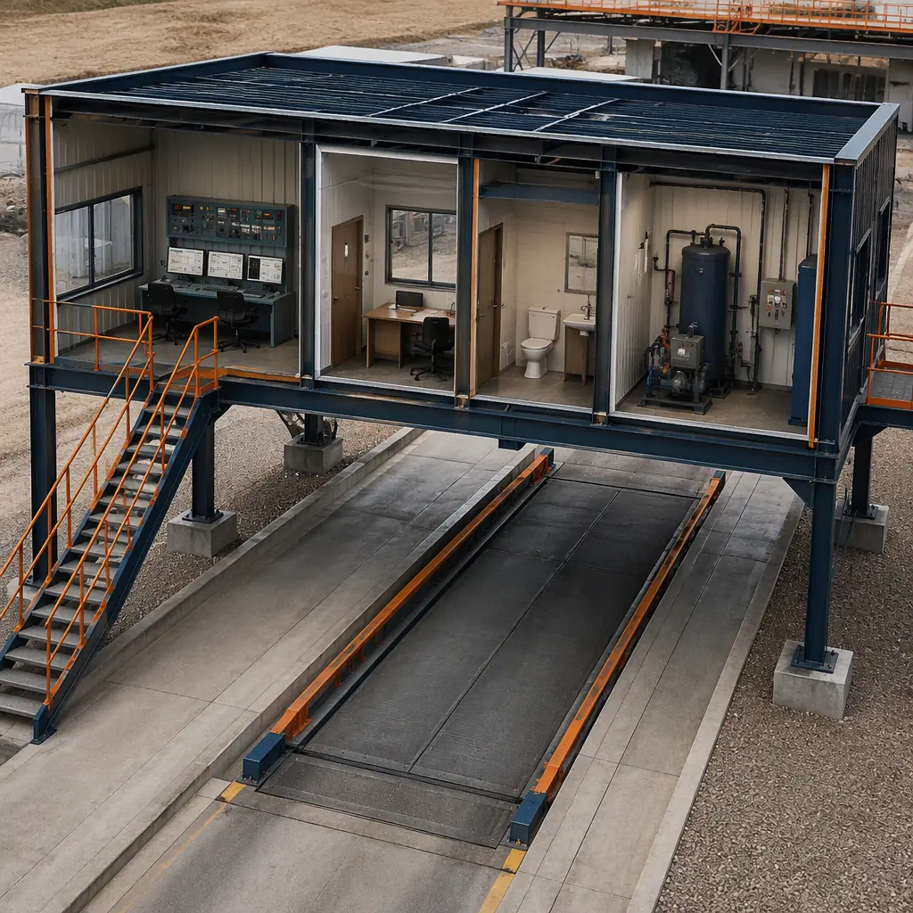
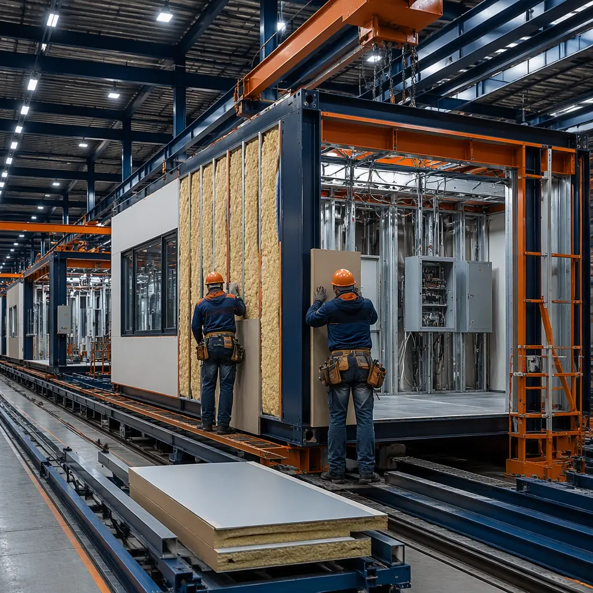

Weigh stations are among the least glamorous and most operationally exacting buildings in the transportation infrastructure program. The US network of fixed and virtual weigh stations enforces federal and state commercial vehicle weight limits — the federal gross vehicle weight limit of 80,000 lb, with state variations — and the Federal Highway Administration's size and weight enforcement programs depend on them to protect pavement life and bridge safety. Yet a weigh station is a deceptively complex build: a scale house with the control room and data systems for the truck scale, inspection bays for commercial vehicle safety inspections under the Commercial Vehicle Safety Alliance (CVSA) standards, parking and approach lanes, and often portable or virtual enforcement support. Conventionally delivered, a fixed weigh station takes 12–18 months and disrupts enforcement for the entire construction period. Modular prefabricated construction manufactures the scale house, inspection building, and support facilities as factory-built steel-frame modules in parallel with scale pit installation and approach paving — compressing the program to 7–10 months with a 20–30% building cost reduction. The same concurrent-production model that accelerates modular transit facilities and bus depots applies to enforcement infrastructure.

Why Weigh Station Delivery Is a Bottleneck
Weigh station programs pair highway-scale civil works with specialized building systems — and the building is rarely the bottleneck that agencies plan around:
- Scale pit and approach civil works dominate the schedule. The concrete scale foundation, approach slabs, drainage, and lane paving for a 70–110 ft truck scale typically take 4–6 months and must cure and settle before enforcement begins. Modular delivery manufactures the scale house and inspection building during this window, so the buildings arrive ready to set when the pit and approaches are ready — the parallel-schedule logic we document for modular construction project timelines.
- Enforcement cannot pause for construction. Agencies operating a weigh station cannot simply close it for a year — weight enforcement shifts to overtime patrols and temporary portable scales, both costly and less effective. Modular replacement compresses the closure to a single construction season: the new scale house and inspection modules are built off-site while the existing station keeps operating, then swapped in with minimal downtime. This phased replacement mirrors what we document for modular expansion on active facilities.
- Specialized MEP and data systems. A modern scale house integrates scale indicator and data systems, WIM (weigh-in-motion) preprocessing, license plate reader (LPR) cameras, communication links to state enforcement networks, and HVAC sized for 24/7 electronics operation. Factory-built modules arrive with these systems pre-installed and tested, compressing the field integration that conventionally adds 3–5 months. The systems integration discipline parallels modular edge data center construction.
- Security and sight lines are design-critical. Weigh stations handle enforcement stops, including sometimes tense interactions, so sight lines, lighting, secure circulation, and fall-protected inspection areas are code and policy requirements. Factory fabrication with documented quality control — the discipline behind modular factory QC systems — delivers these features consistently.


What Gets Factory-Built — The Weigh Station Module Package
The modular weigh station divides into functional modules that can be manufactured, tested, and shipped independently, then combined on site:
Scale House and Control Modules
The scale house — typically 800–1,500 sq ft — houses the scale control room, officer workstations, and the data systems that run the enforcement operation. Factory-built modules arrive with scale indicator systems, LPR camera feeds, WIM preprocessing, network and communications equipment, and HVAC pre-installed and tested. A conventional scale house build takes 5–7 months on site; factory production compresses that to 2–3 months, with the module arriving finished and ready for connection to the scale pit. Control-room building programs follow the pattern we document for modular micro data centers.
Inspection and Enforcement Modules
CVSA commercial vehicle inspection requires covered inspection bays with fall protection, lighting, and space for under-vehicle inspection equipment, plus restroom and break facilities for officers. These arrive as clear-span steel modules with the inspection equipment infrastructure — lighting, power, compressed air, and inspection pit or lift provisions — pre-installed. The clear-span structural approach serves the same industrial building types as modular warehouse and distribution facilities.
Support and Administration Buildings
Administration offices, break rooms, and equipment storage complete the package. These modules arrive finished with HVAC, plumbing, and security systems pre-installed — compressing the specialized field work that conventionally extends weigh station schedules by 2–3 months. Government facility standards for these buildings follow the pattern we document for modular government and municipal buildings.
Portable and Temporary Enforcement Facilities
Agencies increasingly rotate portable scale operations between sites based on enforcement data. Transportable modular units — scale houses on steel skids with quick-connect utility interfaces — give agencies a mobile enforcement capability that relocates in days, not months. The relocatable-building experience from modular temporary and relocatable facilities applies directly.

WIM, Virtual Weigh Stations & the Enforcement Technology Shift
Weigh-in-motion and virtual weigh station technology are changing what agencies build. WIM sensors embedded in the pavement pre-screen trucks at highway speed, and virtual weigh stations use WIM plus cameras to identify overweight vehicles without a physical stop. But fixed facilities remain essential — for enforcement stops, inspections, and the "safe haven" pull-in areas that WIM screening routes violations toward. The emerging program is a hybrid: a reduced-footprint fixed station with scale house, inspection bay, and a small parking area, supported by WIM and camera infrastructure. Modular delivery fits this leaner, tech-forward program natively — the building package shrinks to 1,500–3,000 sq ft, delivered as two or three modules, while the WIM and camera infrastructure installs in the pavement work window. The technology-integration approach parallels modular transportation and logistics construction.
Compliance — DOT, CVSA, and State Standards
Weigh station facilities operate under FHWA size and weight enforcement guidance, CVSA inspection standards, state DOT design manuals, and local building and accessibility codes. Modular delivery supports compliance by enabling factory-documented fabrication — scale indicator and data system integration is coordinated at module design stage, inspection bays are built to CVSA clearance and lighting standards, and the documentation package is delivered for the agency's acceptance inspection. Two compliance details deserve special attention in the design phase. First, approach and exit lane geometry must meet state design standards for deceleration, sight distance, and safe re-entry into highway traffic — this civil design is independent of the building modules but must be coordinated with the scale pit location that the scale house overlooks. Second, officer safety and accessibility provisions — fall protection around inspection pits, non-slip flooring in the scale house, and ADA-compliant restrooms and circulation — are factory-installed and documented, giving the agency's safety officer a single compliance package instead of a field punch list. Procurement for these facilities often runs through state RFP and grant programs; the RFP strategy we document in our modular RFP procurement guide applies directly to enforcement infrastructure.
Cost Structure — Modular vs. Conventional Weigh Station Build
| Cost Category | Conventional (4,000 sq ft Station) | Modular (4,000 sq ft Station) |
|---|---|---|
| Scale house & control building | $0.8–1.3M | $0.6–1.0M (factory-built) |
| Inspection bay building | $0.7–1.1M | $0.55–0.9M (clear-span steel) |
| Admin & support building | $0.5–0.8M | $0.4–0.65M (pre-installed systems) |
| Scale, WIM, cameras & data systems | $0.6–1.0M | $0.5–0.85M (factory-integrated) |
| Field labor, logistics & closure impact | $0.5–0.9M | $0.2–0.4M |
| Total Building Cost | $3.1–5.1M | $2.25–3.8M |
The 20–30% building cost reduction compounds with a construction-season-shorter enforcement gap — material for agencies whose weight enforcement revenue and pavement-protection goals are gated by station availability. For a full treatment of modular project economics, see our 2026 modular cost guide and our developer's ROI analysis.
Network Rollout — Replacing a State's Weigh Station Fleet
State DOTs manage fleets of 20–60+ weigh stations, many built in the 1960s–1980s and now obsolete. Replacing a fleet is a multi-year capital program where modular delivery compounds its advantage: the first station establishes the module designs, documentation package, and commissioning procedures, and every subsequent station reuses them, cutting design time per station by 50–70% and standardizing the scale system integration, signage, and officer training across the fleet. Agencies can also phase capacity — deploying a portable enforcement module now and a fixed station as funding cycles allow — matching capital deployment to actual enforcement priorities. This standardization benefit is the same one we document for modular ROI analysis of multi-site programs, and the grant and lending options in our modular construction lending guide apply to DOT capital programs.
Funding, Procurement & FHWA Grant Programs
Weigh station capital programs are funded through state highway funds, the FHWA's National Highway Performance Program, and increasingly through grant programs tied to commercial vehicle safety and supply chain efficiency. The typical procurement path — a design-bid-build contract managed by a state DOT or turnpike authority — can add 6–12 months before a shovel ever touches the ground, because agencies must navigate state procurement codes, federal funding compliance, and environmental review. Modular delivery compresses this phase in two ways: the module package is specified and procured while the scale pit and approach civil works proceed through their own design and environmental review, and the factory's standard module designs give agencies a documented baseline for cost and schedule that accelerates the RFP evaluation. The RFP strategy we document in our modular RFP procurement guide applies directly, and the grant-funding experience in our construction lending guide covers the state and federal capital program angles.
Is Modular Right for Your Weigh Station Project?
Modular weigh station delivery delivers the strongest value for replacement programs where the existing station must keep enforcing during construction, fleet-wide modernization where production-line repeatability cuts design cost per station, hybrid WIM/virtual enforcement programs where the building footprint shrinks to two or three modules, and remote sites where field labor is scarce. For major ports of entry with extensive inspection facilities, a hybrid approach — modular scale house and admin buildings with conventional inspection sheds — delivers most of the schedule and quality benefits while preserving flexibility for the largest facilities. For agencies building enforcement infrastructure, modular delivery converts the building program from a multi-season disruption into a single-season replacement — consistent with the modular transit facility and modular government building programs we document elsewhere.